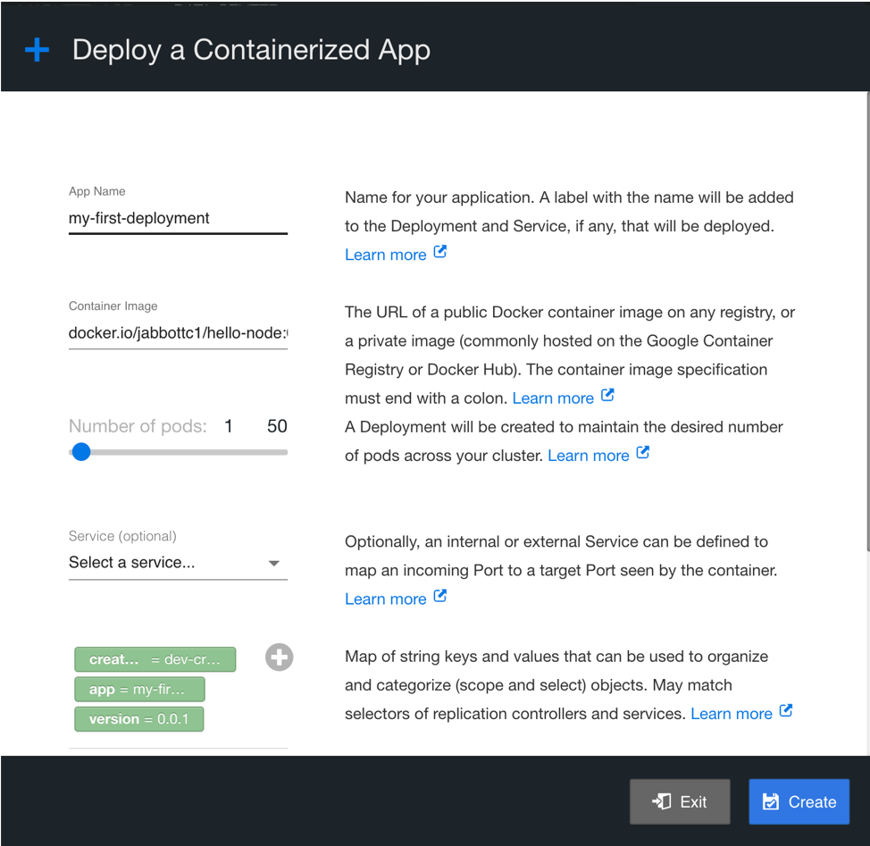
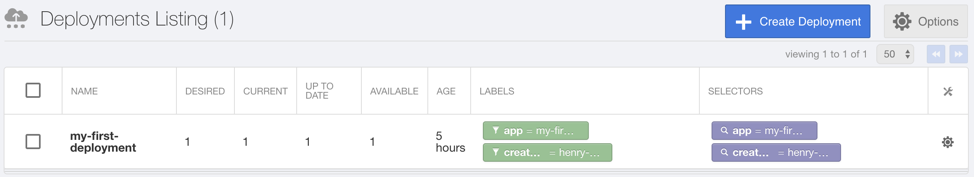
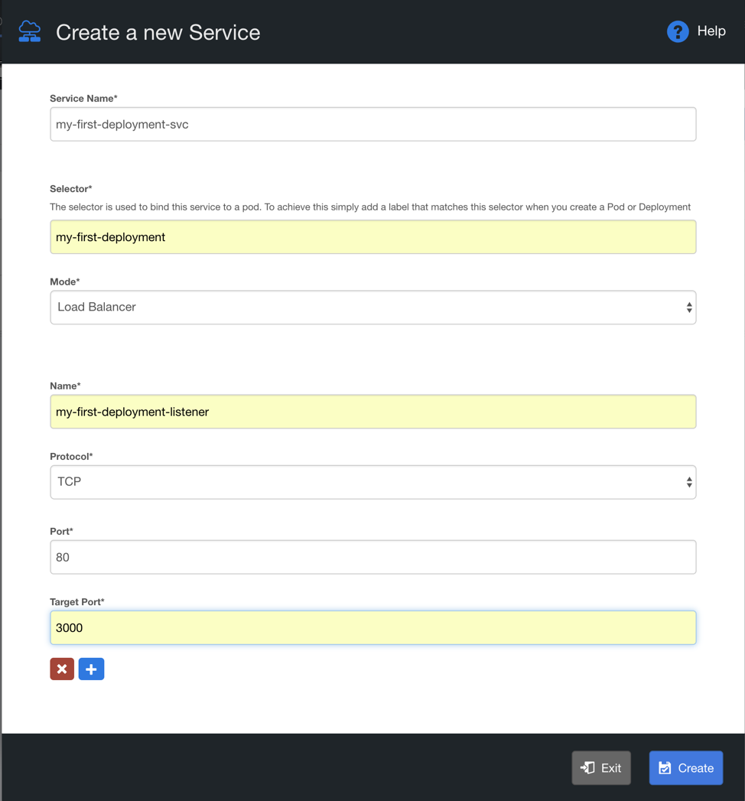
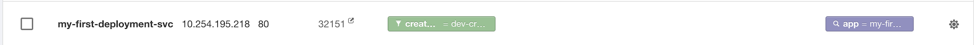
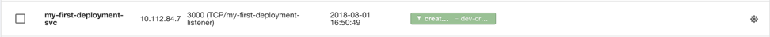
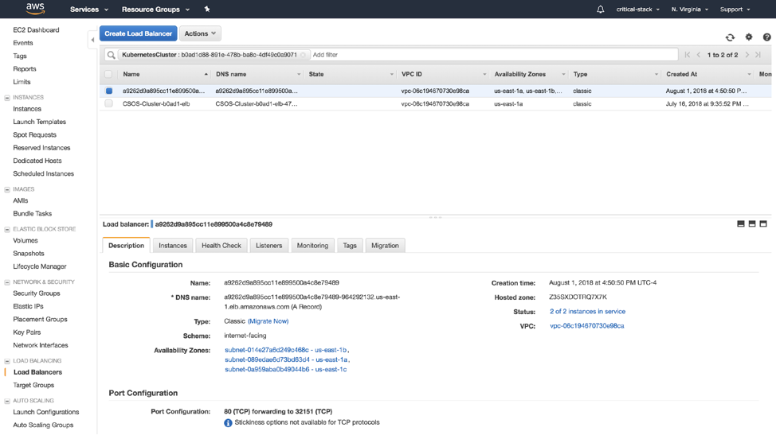
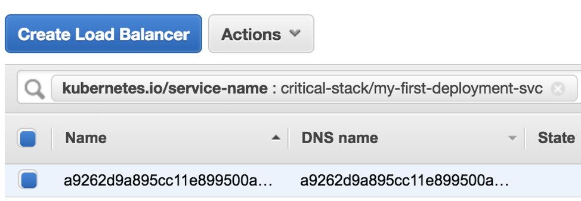
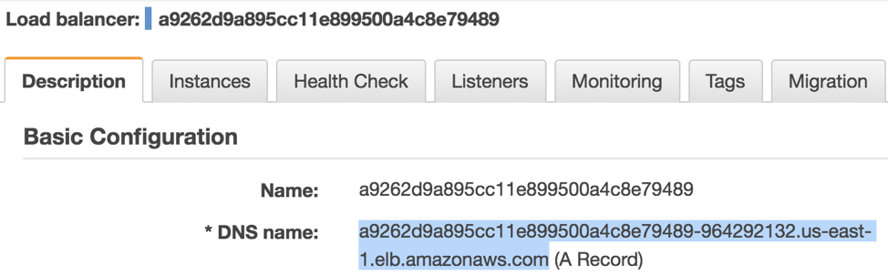
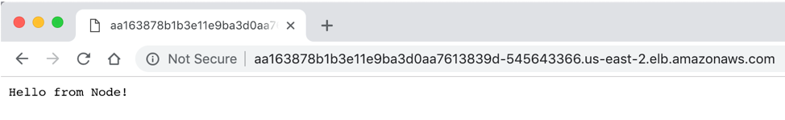

This lab will walk you through the process of deploying a stateless NodeJS application to Critical Stack.
Before we get started, you’ll need:
In this lab we will create a simple NodeJS application, deploy it via Critical Stack. and access it via a public URL.
Open a terminal window. In your current working directory (in the example below we use the Development directory under the user’s home directory) create a directory for this lab called node-lab and a subdirectory of that called app:
user@testhost Development$ mkdir -p node-lab/app
user@testhost Development$ cd node-lab
user@testhost node-lab$ ls
app
Using the editor of your choice, create a file called index.js inside the app directory (resulting in app/index.js) with the following content:
// Say hello from Node
var http = require('http');
http.createServer(function (req, res) {
res.writeHead(200, {'Content-Type': 'text/plain'});
res.end('Hello from Node!\n');
}).listen(3000, "0.0.0.0");
console.log('Server running on :3000');
Generate the app configuration with npm in the root of your node-lab directory.
Accept all defaults except package name, which should be something like hello-node, version number (this is definitely a 0.0.1 release!), and entry point, as that will be app/index.js
user@testhost node-lab$ npm init
This utility will walk you through creating a package.json file.
It only covers the most common items, and tries to guess sensible defaults.
See `npm help json` for definitive documentation on these fields
and exactly what they do.
Use `npm install <pkg>` afterwards to install a package and
save it as a dependency in the package.json file.
Press ^C at any time to quite.
package name: (user) hello-node
version: (1.0.0) 0.0.1
description:
entry point: (index.js) app/index.js
test command:
git repository:
keywords:
author:
license: (ISC)
About to write to /Users/user/Development/node-lab/package.json:
npm makes it easy for JavaScript developers to share and re-use code. Install the dependencies for this lab by running this command:
user@testhost node-lab$ npm install
npm notice created a lockfile as package-lock.json. You should commit this file.
npm WARN hello-node@0.0.1 No description
npm WARN hello-node@0.0.1 No repository field.
up to date in 10.179s
found 0 vulnerabilities
Create a Dockerfile to target node and copy the necessary files into the docker image (Note to instructor: explain the base image from which this image is derived). The port you choose to expose should be the same as the port on which your application server listens. Your Dockerfile should be in the root of your node-lab directory and have the following content:
FROM node:9
# Make base directory
RUN mkdir /src
WORKDIR /src
COPY ./package.json /src/package.json
COPY ./package-lock.json /src/package-lock.json
RUN npm install --silent
COPY ./app /src/app
EXPOSE 3000
CMD ["node", "app/index.js"]
Build a Docker image using the Dockerfile with the tag hello-node:
user@testhost node-lab$ docker build -t hello-node -f Dockerfile .
Sending build context to Docker daemon 71.68kB
Step 1/8 : FROM node:9
---> 08a8c8089ab1
Step 2/8 : RUN mkdir /src
...
If you want to test this out locally before deploying it, you can use docker to launch the process in the container image to verify that it behaves as expected:
user@testhost node-lab$ docker run -p 3000:3000 --rm -ti hello-node
Server running on :3000
Once this is running, you can check that the application works by using curl in a new terminal window:
user@testhost ~$ curl http://localhost:3000/
Hello from Node!
Note: to stop the running container run this command from the new terminal window (this uses -f to find the container created from your hello-node image):
user@testhost ~$ docker stop $(docker ps -qf "ancestor=hello-node")
42c18d268c56
You should see the container exit and your shell prompt return in your original terminal window.
user@testhost node-lab$ docker login
Login with your Docker ID to push and pull images from Docker Hub. If you don't
have a Docker ID, head over to https://hub.docker.com to create one.
Username: <your username here>
Password:
Login Succeeded
Add the tag to be used in the public container registry (Note to instructor: Advise on tag naming convention)
user@testhost node-lab$ docker tag hello-node <your-user-name>/hello-node:0.0.1
user@testhost node-lab$ docker tag hello-node <your-user-name>/hello-node:0.0.1
The push refers to repository [docker.io/<your-user-name>/hello-node]
99599c00434b: Pushed
2c18bd33cb20: Pushed
41b63aaeffc4: Pushed
df64ff0ed93f: Pushed
71521673e105: Mounted from library/node
7695686f75c0: Mounted from library/node
e492023cc4f9: Mounted from library/node
cbda574aa37a: Mounted from library/node
8451f9fe0016: Mounted from library/node
858cd8541f7e: Mounted from library/node
a42d312a03bb: Mounted from library/node
dd1eb1fd7e08: Mounted from library/node
0.0.1: digest: sha256:e755e97b58a700207b2a9ba0deaa26927210b84f8d79618d1c4cd8f498b97373 size: 2834
Your image digest and layer hashes will differ.
Login to Critical Stack. Under Data Center > Workloads select Deployments. Create a Simple Deployment in Critical Stack. Call the app name whatever you like (in this example I used my-first-deployment). Next, point to the tagged Docker image recently pushed into the image registry (docker.io/<your-user-name>/hello-node:0.0.1). Leave the rest of the inputs at their defaults:

Under Data Center > Workloads select Deployments and confirm that the deployment created in the previous step is Available (a non-zero number is visible in the Available column).

Under Data Center > Services and Discovery select Services. Create a Simple Service in Critical Stack.
my-first-deployment-svc).my-first-deployment-listener).80).3000)
Under Data Center > Services and Discovery select Services, check the service listing and note the dynamic port which was assigned to it. In this example it is port 32151 (but your port number will likely be different).

Under Data Center > Services and Discovery select Endpoints, confirm that the service created has the just created listener configured to the port supported by the app and exposed in the Dockerfile (in this example, port 3000).

Log into the cloud provider console associated with this deployment of Critical Stack (note: we are running our Critical Stack cluster on AWS EC2. The following steps will be AWS-specific).
Navigate to the Load Balancers section:

Find the Load Balancer created by Critical Stack/Kubernetes during the creation of the Service in step 12. To quickly find the relevant load balancer, enter kubernetes.io/service-name as the Tag Key in the Filter text box.
For the Tag Value, enter in the name of the service created in the previous step. In this example, our service name is critical-stack/my-first-deployment-svc.

Click the Load Balancer found in the previous step. At the bottom of the screen you should see a tab called Description. Within the data displayed under that tab you should see DNS name under the Basic section. Copy this DNS value as it is the auto-generated, publicly facing domain name.

Paste the DNS value copied from the previous step into a browser. This confirms that the app we have deployed onto our Critical Stack cluster is fully live and available to the public internet.

We created a simple NodeJS application, packaged the application in a Docker image, pushed the Docker image to a public Docker Hub repository, pulled that Docker image into a Critical Stack deployment as a container instance, and accessed the application via a public URL.
To learn the basics of managing the lifecycle of an application, see the next lab.